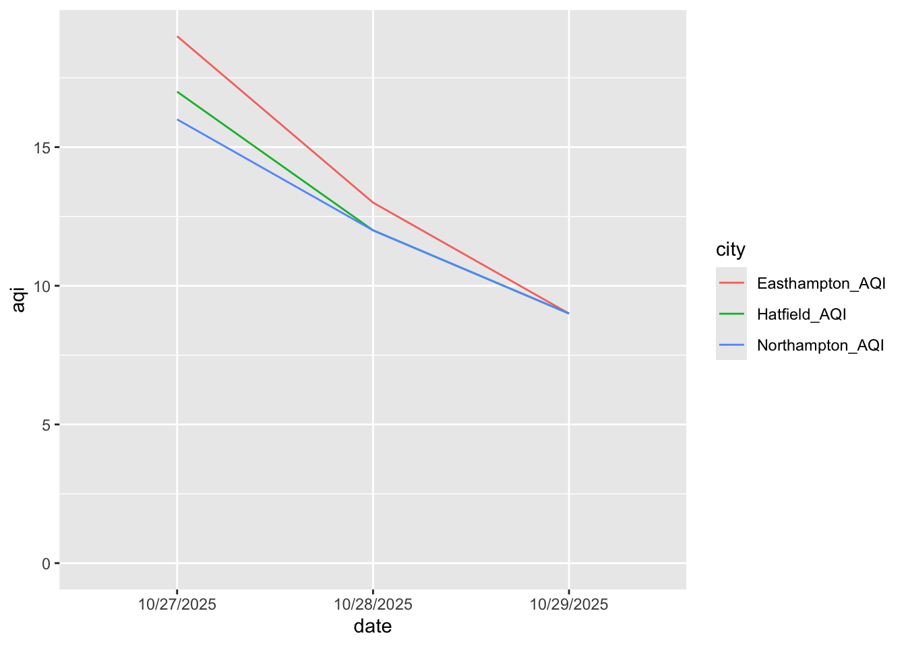
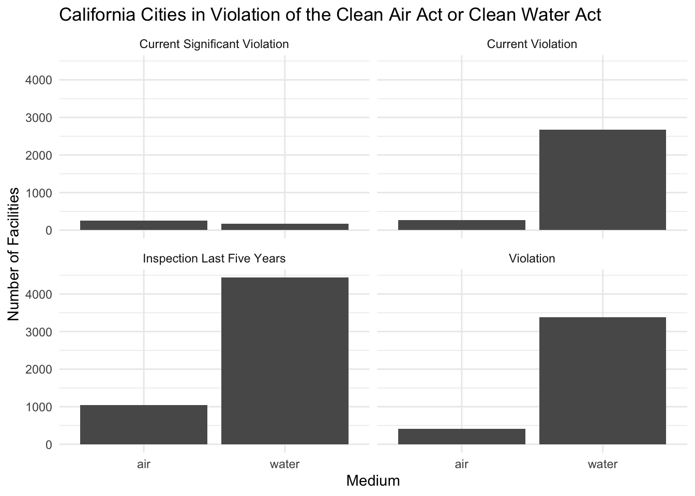

── Attaching core tidyverse packages ──────────────────────── tidyverse 2.0.0 ──
✔ dplyr 1.1.4 ✔ readr 2.1.5
✔ forcats 1.0.0 ✔ stringr 1.6.0
✔ ggplot2 4.0.0 ✔ tibble 3.3.0
✔ lubridate 1.9.3 ✔ tidyr 1.3.1
✔ purrr 1.1.0
── Conflicts ────────────────────────────────────────── tidyverse_conflicts() ──
✖ dplyr::filter() masks stats::filter()
✖ dplyr::lag() masks stats::lag()
ℹ Use the conflicted package (<http://conflicted.r-lib.org/>) to force all conflicts to become errorsPivoting Data
SDS 192: Introduction to Data Science
For Today
- Pivoting longer
- Pivoting wider
- Separating
- Uniting
Tidy Data
- Every observation has its own row.
- Every variable has its own columns.
- Every value has its own cell.
Is this tidy?
What variables are displayed on this plot?
df <- data.frame(
date = c("10/27/2025","10/28/2025","10/29/2025"),
Northampton_AQI = c(16, 12, 9),
Easthampton_AQI = c(19, 13, 9),
Hatfield_AQI = c(17, 12, 9)
)
df date Northampton_AQI Easthampton_AQI Hatfield_AQI
1 10/27/2025 16 19 17
2 10/28/2025 12 13 12
3 10/29/2025 9 9 9Could I make this plot?

What will it look like when tidy?
a <- df |> pivot_longer(-date,
names_to = "city",
values_to = "aqi")
a# A tibble: 9 × 3
date city aqi
<chr> <chr> <dbl>
1 10/27/2025 Northampton_AQI 16
2 10/27/2025 Easthampton_AQI 19
3 10/27/2025 Hatfield_AQI 17
4 10/28/2025 Northampton_AQI 12
5 10/28/2025 Easthampton_AQI 13
6 10/28/2025 Hatfield_AQI 12
7 10/29/2025 Northampton_AQI 9
8 10/29/2025 Easthampton_AQI 9
9 10/29/2025 Hatfield_AQI 9Pivoting Longer
- We use
pivot_longer()to pivot a datasets from wider to longer format: pivot_longer()takes the following arguments:
cols =: Identify a series of columns to pivot - The names of those columns will become repeated rows in the pivoted data frame, and the values in those columns will be stored in a new column.names_to =: Identify a name for the column where the column names will be storevalues_to =: Identify a name for the column were the values associated with those names will be stored- Various arguments to support transformations to names
Example
date Northampton_AQI Easthampton_AQI Hatfield_AQI
1 10/27/2025 16 19 17
2 10/28/2025 12 13 12
3 10/29/2025 9 9 9df |> pivot_longer(cols = ends_with("AQI"),
names_to = "city",
values_to = "aqi") |>
mutate(city = str_replace(city, "_AQI", ""))# A tibble: 9 × 3
date city aqi
<chr> <chr> <dbl>
1 10/27/2025 Northampton 16
2 10/27/2025 Easthampton 19
3 10/27/2025 Hatfield 17
4 10/28/2025 Northampton 12
5 10/28/2025 Easthampton 13
6 10/28/2025 Hatfield 12
7 10/29/2025 Northampton 9
8 10/29/2025 Easthampton 9
9 10/29/2025 Hatfield 9Pivoting Wider
Note: I use this far less often than
pivot_longer()
- We use
pivot_wider()to pivot a datasets from longer to wider format: pivot_wider()takes the following arguments:
names_from =: Identify the column to get the new column names fromvalues_from =: Identify the column to get the cell values from- Various arguments to support transformations to names
Example
# A tibble: 9 × 3
date city aqi
<chr> <chr> <dbl>
1 10/27/2025 Northampton 16
2 10/27/2025 Easthampton 19
3 10/27/2025 Hatfield 17
4 10/28/2025 Northampton 12
5 10/28/2025 Easthampton 13
6 10/28/2025 Hatfield 12
7 10/29/2025 Northampton 9
8 10/29/2025 Easthampton 9
9 10/29/2025 Hatfield 9df |> pivot_wider(names_from = "date",
values_from = "aqi",
names_repair = make.names)# A tibble: 3 × 4
city X10.27.2025 X10.28.2025 X10.29.2025
<chr> <dbl> <dbl> <dbl>
1 Northampton 16 12 9
2 Easthampton 19 13 9
3 Hatfield 17 12 9Separating Columns
- We use
separate()to split a column into multiple columns: separate()takes the following arguments:
col: Identify the existing column to separateinto = c(): Identify the names of the new columnssep =: Identify the characters or numeric position that indicate where to separate columns
Example
date Northampton_AQI Easthampton_AQI Hatfield_AQI
1 10/27/2025 16 19 17
2 10/28/2025 12 13 12
3 10/29/2025 9 9 9
Northampton_temperature Easthampton_temperature Hatfield_temperature
1 53 54 53
2 57 58 57
3 55 55 55df |> pivot_longer(cols = -date,
names_to = "city",
values_to = "values") |>
separate(city, into = c("city", "metric"), sep = "_")# A tibble: 18 × 4
date city metric values
<chr> <chr> <chr> <dbl>
1 10/27/2025 Northampton AQI 16
2 10/27/2025 Easthampton AQI 19
3 10/27/2025 Hatfield AQI 17
4 10/27/2025 Northampton temperature 53
5 10/27/2025 Easthampton temperature 54
6 10/27/2025 Hatfield temperature 53
7 10/28/2025 Northampton AQI 12
8 10/28/2025 Easthampton AQI 13
9 10/28/2025 Hatfield AQI 12
10 10/28/2025 Northampton temperature 57
11 10/28/2025 Easthampton temperature 58
12 10/28/2025 Hatfield temperature 57
13 10/29/2025 Northampton AQI 9
14 10/29/2025 Easthampton AQI 9
15 10/29/2025 Hatfield AQI 9
16 10/29/2025 Northampton temperature 55
17 10/29/2025 Easthampton temperature 55
18 10/29/2025 Hatfield temperature 55Uniting Columns
- We use
unit()to join multiple columns into one column: unitetakes the following arguments:
...: Identify the existing columns to unitecol: Name of the new columnsep =: Identify the characters or numeric position that indicate where to separate columns
Example
month_day year Northampton_AQI Easthampton_AQI Hatfield_AQI
1 10/27 2025 16 19 17
2 10/28 2025 12 13 12
3 10/29 2025 9 9 9df |> unite(month_day, year, col = "date", sep = "/") date Northampton_AQI Easthampton_AQI Hatfield_AQI
1 10/27/2025 16 19 17
2 10/28/2025 12 13 12
3 10/29/2025 9 9 9Let’s practice!
`summarise()` has grouped output by 'violation'. You can override using the
`.groups` argument.
# A tibble: 30,999 × 9
RegistryID CurrSvFlag_water ViolFlag_water CurrVioFlag_water
<chr> <dbl> <dbl> <dbl>
1 110000473176 0 0 0
2 110000473247 0 0 0
3 110000473345 0 0 0
4 110000473372 0 1 0
5 110000473407 0 0 0
6 110000473434 0 1 0
7 110000473443 0 1 1
8 110000473489 0 1 1
9 110000473498 0 0 0
10 110000473639 0 0 0
# ℹ 30,989 more rows
# ℹ 5 more variables: Insp5yrFlag_water <dbl>, CurrSvFlag_air <dbl>,
# ViolFlag_air <dbl>, CurrVioFlag_air <dbl>, Insp5yrFlag_air <dbl>Steps
- Brainstorm the ggplot code (i.e. what goes on the x and y axis).
- Sketch out what the data frame should look like (i.e. what columns and rows).
- List the cleaning functions that you will need to to create the data frame.
- Write pseudo-code to create the data frame.